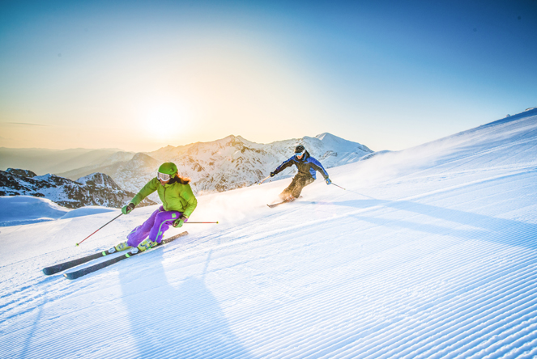

The state of Montana offers a bountiful variety of ski resorts, all within driving distance of Missoula. The high altitude in mountainous regions paired with a crisp dry climate render incredible conditions for resort goers and back-country junkies alike. Outdoor enthusiast from all over the world make their way to the rocky state to experience the gargantuan snow-fall of the Big Sky region. The disconnect from any large populations enables these snow-chasers to envelop themselves in the sea of snow-pack and ride untouched powder for days.
For all those who hail from Missoula County, the options are vast whether one be a everyday-rider, or a weekend warrior. Students attending the University of Montana often times make the quick twenty minute trip up to snowbowl in to ski a few laps before afternoon classes. Parents who yearn for the weekend powder can make the short drive to Lost Trail or Lookout and leave their little ones with the ski-school while simultaneously chasing powder pillows and their inner ski-bum. It is not uncommon to find the older generation continuing to shred the corduroy or backcountry whether that be at a resort or in the Lolo Wilderness. Montanans are fortunate to have some form of skiing available for the majority of the year.
Photos provided from Google Images.